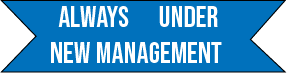
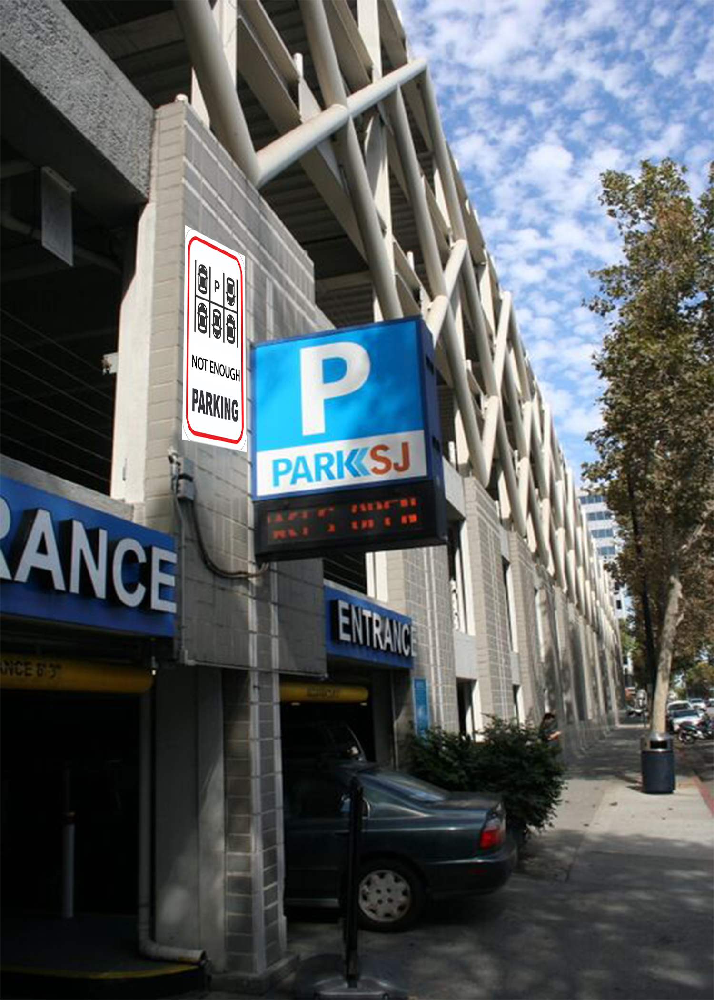
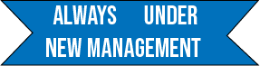
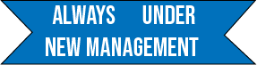

The locations that I chose were Michaels, Philz Coffee, The Colonnade Apartments, and the ParkSJ: Thrid and Santa Clara Garage
The first location that I chose was Michaels which is on Coleman. The sign has a piggy bank and art supplies, as this store doesn't have a lot of big sales on art supplies, resulting in people spending more just to get a small discount later on.

The second location is the Colonnade Apartments on South 4th Street. The sign represents the managment at the apartment complex tending to change quite often. Since I've lived here, managment has changed almost every year.

The third location is the public parking garage on Third and Santa Clara Street. The sign is placed here because in San Jose, even though there are many parking garages, there never seems to be enough parking.
The last location is Philz Coffee also located on South 4th Street, near the Colonnade Apartments. This sign is placed here because many people come to Philz to get their coffee fix in the morning to get that extra umph before work or classes (usually pre-covid)
phase 2: CAD/CAM, modeling objects and toolpath simulations
 
